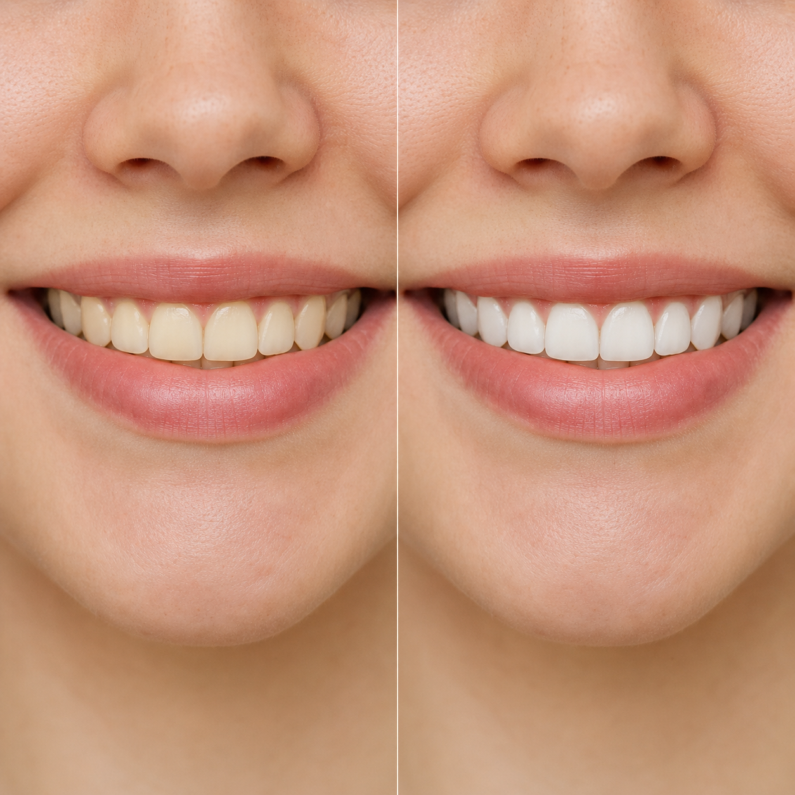

Промтзилла
Как отбелить зубы на фото через ИИ
Загрузи портрет с улыбкой — GPT Image 2 или Nano Banana PRO мягко осветлит зубы, уберёт желтизну и сохранит естественный вид без пластиковой белизны.
Пошаговая инструкция
- 1Выбери фото, где улыбка хорошо видна: зубы не перекрыты губами, тенью или сильным бликом.
- 2Открой GPT Image 2 или Nano Banana PRO и загрузи исходный снимок.
- 3Скопируй промт ниже и вставь его в поле ввода вместе с фото.
- 4Попроси сделать именно лёгкое естественное осветление, а не менять форму зубов или улыбку.
- 5Если результат стал слишком белым, добавь: «уменьши эффект, сохрани натуральный оттенок эмали».
- 6Сравни результат с оригиналом и выбери вариант, где улыбка выглядит чисто, но естественно.
Пример результата

ДоИсходное фото до обработки.
ПослеЕстественное осветление зубов без изменения улыбки
Промт
RU
Загружаю портретное фото человека с улыбкой. Аккуратно осветли зубы на фото, чтобы улыбка выглядела чище и свежее, но осталась естественной. Требования: — Осветлить только зубы, не менять губы, кожу, лицо, форму улыбки и выражение — Убрать лёгкую желтизну и сделать оттенок эмали более ровным — Не делать зубы ослепительно белыми, пластиковыми или неестественными — Сохранить форму, размер и положение каждого зуба — Не добавлять новые зубы, не выравнивать прикус и не менять анатомию — Сохранить исходное освещение, тени и текстуру фото — Результат должен выглядеть как аккуратная фоторетушь, а не как стоматологическая реклама — Без текста, подписей, водяных знаков и рамок
EN
I'm uploading a portrait photo of a person smiling. Carefully whiten the teeth so the smile looks cleaner and fresher while staying natural. Requirements: — Whiten only the teeth; do not change the lips, skin, face, smile shape or expression — Reduce slight yellow tones and make the enamel color more even — Do not make the teeth blinding white, plastic-looking or unnatural — Preserve the shape, size and position of every tooth — Do not add new teeth, do not straighten the bite and do not change anatomy — Preserve the original lighting, shadows and photo texture — The result should look like subtle professional photo retouching, not a dental advertisement — No text, captions, watermarks or frames
Теги
Эту страницу можно использовать онлайн: промпт подходит для работы с ИИ и нейросетью.